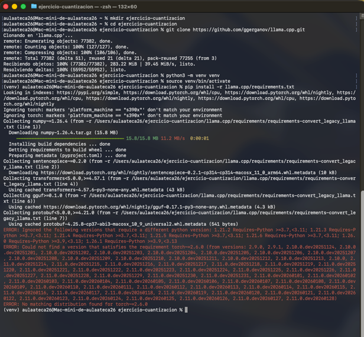
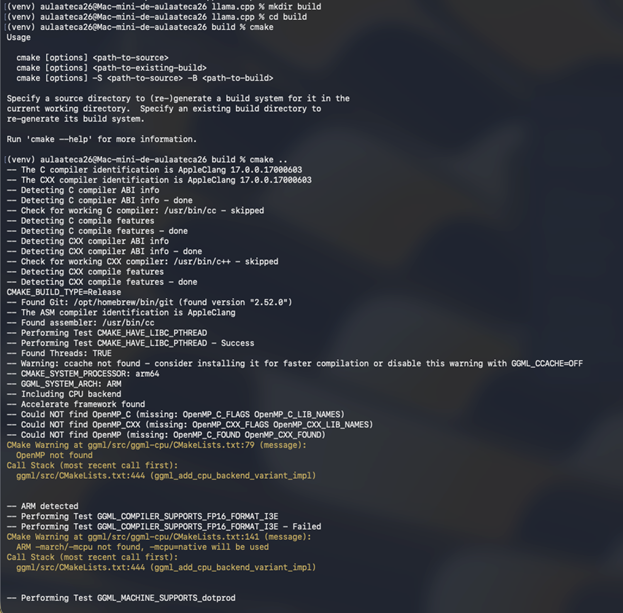
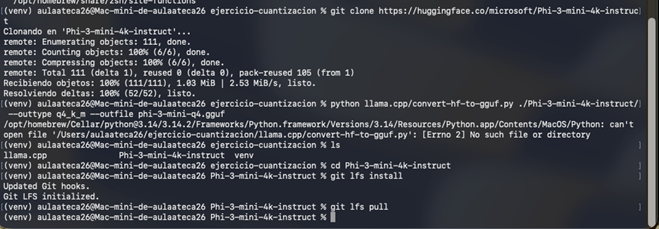
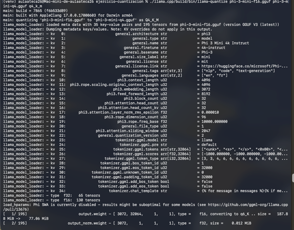
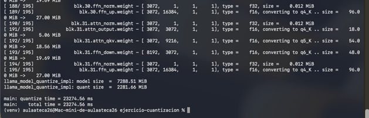
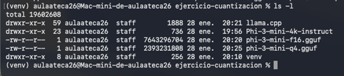
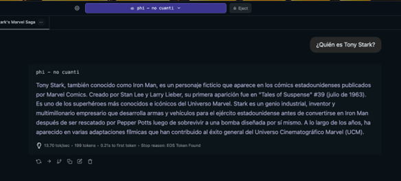
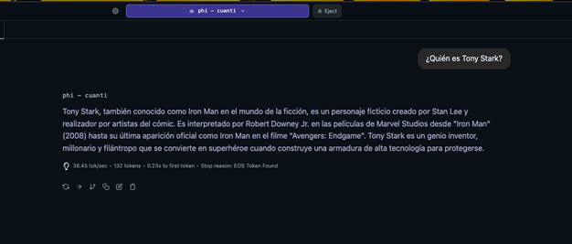

Paso 01
Preparación del Entorno
Configuración de dependencias de Python y clonación del entorno de trabajo.
mkdir ejercicio-cuantizacion && cd ejercicio-cuantizacion
git clone https://github.com/ggerganov/llama.cpp.git
python3 -m venv venv && source venv/bin/activate
pip install -r llama.cpp/requirements.txt
git clone https://github.com/ggerganov/llama.cpp.git
python3 -m venv venv && source venv/bin/activate
pip install -r llama.cpp/requirements.txt

Instalación del entorno virtual

Compilación del sistema CMake
Paso 02
Compilación de Binarios
Utilizamos CMake para generar los ejecutables optimizados para Metal (GPU del Mac Mini).
cd llama.cpp && mkdir build && cd build
cmake ..
cmake --build . --config Release -j
cmake ..
cmake --build . --config Release -j
Adquisición del Modelo Base
git clone https://huggingface.co/microsoft/Phi-3-mini-4k-instruct
cd Phi-3-mini-4k-instruct && git lfs install && git lfs pull
cd Phi-3-mini-4k-instruct && git lfs install && git lfs pull

Descarga de pesos originales en alta precisión FP16.
Análisis de Eficiencia
| Formato Técnico | Precisión (Bits) | Peso en Disco | Rendimiento Mac Mini |
|---|---|---|---|
| FP16 (Original) | 16-bit | 7.64 GB | Exigente |
| Q4_K_M (Cuantizado) | 4-bit | 2.39 GB | Optimizado |
| Q2_K | 2-bit | ~1.5 GB | Mínimo |

./llama-quantize phi-3-mini-f16.gguf phi-3-mini-q4.gguf q4_k_m

Finalización del proceso de empaquetado y verificación de tensores.
Data Benchmarking
Uso de Memoria

Reducción Total
68.7%
Velocidad de Inferencia
ORIGINAL FP16
13.70 t/s
Cuantizado Q4_K_M
38.45 t/s